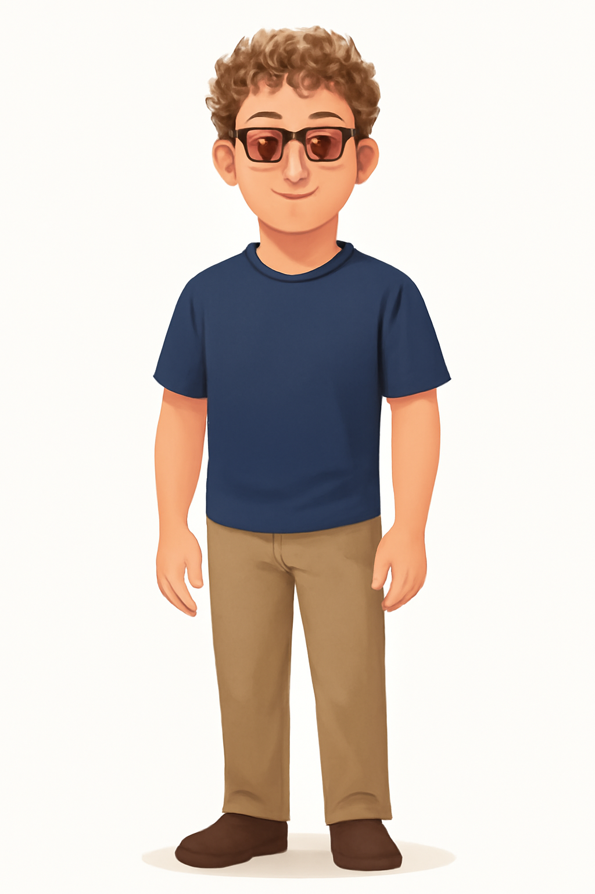

01PRIVATE REFERENCE
Upload your photo
A clear, front-facing photo helps Twin keep your features recognizable.
PNG, JPEG, OR WEBP · UNDER 8 MB
Start with a private photo. Then approve one full-body avatar that Twin can carry into every part of your day.
A clear, front-facing photo helps Twin keep your features recognizable.
PNG, JPEG, OR WEBP · UNDER 8 MB
Approve one standing version of you. Activity images grow from this look.

Saved versions for each activity live here. Keep the one you like, make another, or remove it.
Choose what your twin can use to understand your day.
Your schedule and open time
DEMO DATAPossible dates from email
DEMO DATAYou seem to value a day with room to reset. A short walk and a real break may help you return to focused work, while late evenings are better left free of demanding tasks.